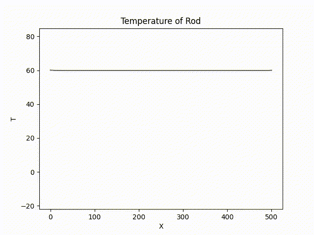

Featured Projects
ParticleSHAI


Particle Simulations Histograms Artificial Intelligence is a Data Analysis Framework
written in Python. Packages such as Pythia, Pyjet, Matplotlib, and TensorFlow are utilized as the back end to
simulate events in the Large Hadron Collider. For more information, please refer my Senior Thesis here.
Ising Model Simulation

The Ising model displays the thermodynamic properties of a ferromagnet by simulating the interactions of N2
atoms (or spin-sites) on an N × N grid. In the animation above, energy is gradually increased in time, until the
structure of the lattice becomes more chaotic, indicating a phase change. For more information,
please refer the original report here.
Simulations of Partial Differential Equations

Simulation of needle with surfaces cooled to -20 Celsius and inlet temperature set to a sine function. The simulation
has been sped up to fit in a gif. In the program, time is an input controlled by a slider. To represent the
passage of time in a gif that's been sped up ~31x, a repeat in the color of the pipe indicates ~10 seconds have passed
in the simulation.


Contour heat-map of pressure in a mask gap and
Plot of force density vector field.